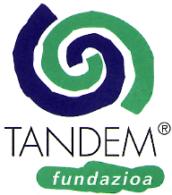

|  | TANDEM® Fundazioa PK/Apdo. 864 E-20080 Donostia / San Sebastián SPAIN Fax + Tel. +34 - 43 - 322 062 (Monday, Wednesday, Friday 10 - 13 h) |
What is TANDEM®?
A TANDEM® for each opportunity?
TANDEM Foundation
Goals and Fields of Work
| Canada: | International Language School of Canada Vancouver |
| Chile: | Escuela de Idiomas «Violeta Parra» Santiago de Chile |
| Costa Rica: | Cultourica Ciudad Colón El Marañón |
| France: | A.C.Fr.It. Machiavelli Toulouse, LANGUE ONZE Paris, LANGUE ONZE SUD OUEST Lavaur |
| Germany: | tandem Berlin Berlin, Dialogo & Horizont Hamburg, CASA Bremen, TANDEM Bielefeld Bielefeld, TANDEM - Eine Welt Göttingen, ZENTRUM für Deutsche Sprache und Kultur Frankfurt/Main, TANDEM Karlsruhe Karlsruhe, TandeMünchen München |
| Great Britain: | Totnes School of English Totnes, Devon |
| Ireland: | Bluefeather School Dublin |
| Italy: | Torre di Babele Roma, AC Rainbow Brescia, EUROCULTURA Vicenza, Alpha & Beta Meran(o), Machiavelli Firenze |
| Peru: | ACUPARI Cusco |
| Poland: | Tandem - Mobile Wroclaw |
| Spain: | MetroCultura - TANDEM Barcelona, TANDEM Granada Granada, CiC TANDEMDonostia/San Sebastián, TANDEM Escuela Internacional Madrid, TANDEM Oviedo - NATURLENGUA Oviedo, TANDEM Canarias Agüimes |
TANDEM is a bicycle designed for two riders both involved in getting forward. We have taken this word into our method of learning by exchanging languages with our motto: "In order to understand each other better I help you to learn and you help me to learn." TANDEM is therefore the bicycle among various language learning approaches - it is cheap, individual and ecological. It is a communicative as well as an intercultural approach as it gives the opportunity to both learners to gain more insight into each other's culture by direct communication.
TANDEM ist the most active way of learning for everyone who wants to learn creatively, have fun and get new experience at the same time. There are both types of TANDEM: the one-to-one-TANDEM, a totally autonomous way and the TANDEM class which supports an autonomous way of learning. Also in the language courses the teachers are flexible and work with small groups.
The teachers are native speakers and create their own working conditions within non-profit organizations, cultural cooperatives and self employment enterprises. This democratic structure is rather complicated but it enables a better adaptation on the learners demands.
For many years there has been a scientific advisory to TANDEM. The International TANDEM Conference celebrated every two years, provides the opportunity for an exchange of experiences between teachers and researchers. In this way, it is a professional alternative to those approaches incapable of combining language and culture, learning and reality.
Those schools or organizations using TANDEM are internationally merged into a TANDEM-Network which is expanding continually. Each school is the entrance to others in- and outside the country. TANDEM is an approach not kept within narrow limits.
TANDEM®
...more than just language learning!
[Index]
TANDEM® is a method applicable to all ages, from children to seniors.
TANDEM can be used in many ways:
TANDEM works:
TANDEM until now has been used in 16 languages:
TANDEM, many goals under one roof:
TANDEM, as one form of autonomous learning, offers flexibility of content:
In the vocational training we introduce specific Tandem situations.
[Index]
In order to improve scientific cooperation and on-going teacher training, tandem users (most of whom have been incorporated into the TANDEM network) established the Foundation "TANDEM Fundazioa", the main office of which is located in Donostia/San Sebastián, in the Basque Country, and which began functioning on January 1, 1994. Trademark rights, first held by Michael Friedrich, the Cooperative in Madrid "Centro Cultural Hispano Alemán TANDEM" and Jürgen Wolff, have been thus taken over by the Foundation. For further information on TANDEM method and those who want to be a member, the Foundation is to be consulted. It was recognised as a Charity by order number 2698 of the Basque Ministry of Culture on July 11, 1994, as published on page 9013 of the Basque Government Bulletin, and is allowed to accept tax deducible donations.
[Index]
Its goals are to improve understanding between peoples and promote intercultural exchange by means of pilot courses, documentation and diffusion of materials, teacher training and international project networks, especially in the areas of:
[Index]
International Language School of Canada, 510 West Hastings Str 2nd Floor, Vancouver BC, V6B 1L8, Canada - Tel: INT-1-604-689 9095, Fax: INT-1-604-683 0771
Escuela de Idiomas «Violeta Parra», Filipo Lippi 7959, Las Condes, Santiago de Chile, Chile - Tel: INT-56-2-229 8246, Fax: INT-56-2-229 8246
Cultourica Ciudad Colón, Barrio La Trinidad, El Marañón, Costa Rica - Tel: INT-506-249 1761, Fax: INT-506 249 1761
tandem Berlin, Lychener Str. 7, D-10437 Berlin - Tel: INT-49-30-441 3003, Fax: INT-49-30-441 5305
Tandem Hamburg, horizont dialogo e.V., Schillerstr. 26, D-22767 Hamburg - Tel: INT-49-40-38 19 59, Fax: INT-49-40-389 26 24
CASA, Goetheplatz 4, D-28203 Bremen - Tel: INT-49-421-320 482, Fax: INT-49-421-320 485
TANDEM Bielefeld, Turnerstr. 27, D-33602 Bielefeld - Tel: INT-49-521-69263, 69189, Fax: INT-49-521-69 119
TANDEM-Eine Welt, Postfach 3309, D-37023 Göttingen - Tel: INT-49-551-48 5055, Fax: INT-49-551-47 416
ZENTRUM für Deutsche Sprache und Kultur, Tilsiter Str. 4, D-60487 Frankfurt/Main - Tel: INT-49-69-777 171, 181, Fax: INT-49-69-774 026
TANDEM Karlsruhe, Wilhelmstr. 15, D-76137 Karlsruhe - Tel: INT-49-721-373 144, Fax: INT-49-721-36 099
TandeMünchen, Ickstattstr. 22 Rgb., D-80469 München - Tel: INT-49-89-202 1321, Fax: INT-49-89-202 1320
Bluefeather School, 35, Montpelier Parade, Monkstown, Co. Dublin, Ireland - Tel: INT-353-1-280 6288, Fax: INT-353-1-280 6035, E-Mail: bluefthr@iol.ie
MetroCultura - TANDEM, Ronda St. Antoni, 100, E-08001 Barcelona - Tel: INT-34-3-301 4634, Fax: INT-34-3-301 4634
TANDEM Granada, c Conde Cifuentes, 11, E-18005 Granada - Tel: INT-34-58-25 6875, Fax: INT-34-58-25 6875
CiC TANDEM, Apdo 1.075, E-20080 Donostia / San Sebastián - Tel: INT-34-43-42 5157, Fax: INT-34-43-42 5292
TANDEM Escuela Internacional, c Luis Vélez de Guevara, 8 bajo, E-28012 Madrid - Tel: INT-34-1-369 1625, Fax: INT-34-1-369 1932
TANDEM Oviedo - NATURLENGUA, c Campoamor, 11 entlo, E-33002 Oviedo - Tel: INT-34-98-520 39 84, Fax: INT-34-98-520 39 84
TANDEM Canarias, Oficina de Turismo Rural, Apdo. 166, E-35260 Agüimes - Tel: INT-34-28-12 4183, Fax: INT-34-28-78 5988, E-Mail: aytoagu@ibm.net
A.C. Fr. It. Machiavelli, 3 ter rue de Luppé, F-31500 Toulouse - Tel: INT-33-6216 3599
LANGUE ONZE, 15, rue Gambey, F-75011 Paris - Tel: INT-33-1-4338 2287, Fax: INT-33-1-4338 3601
LANGUE ONZE SUD OUEST, BP 31, F-81500 Lavaur - Tel: INT-33-6358 4098, Fax: INT-33-6358 4130
Totnes School of English, 51 B High Street, GB-Totnes, Devon TQ9 5NP - Tel: INT-44-1803-865 722, Fax: INT-44-1803-865 722, E-Mail: 100601.1177@compuserve.com
Torre di Babele, Via Bixio, 74, I-00185 Roma - Tel: INT-39-6-7047 4976, 700 8434, Fax: INT-39-6-7049 7150, E-Mail: babele@flashnet.it
AC Rainbow, Via Pietro da Cemmo, 7, I-25126 Brescia - Tel: INT-39-30-375 6804, Fax: INT-39-30-377 3860
EUROCULTURA, Via Rossi, 7, I-36100 Vicenza - Tel: INT-39-444-964 770, Fax: INT-39-444-960 129
Alpha&Beta, Portici/Lauben 246, I- 39012 Meran(o) - Tel: INT-39-473-210 650, Fax: INT-39-473-211 595
Machiavelli, Piazza Sto Spirito, 5, I-50125 Firenze - Tel: INT-39-55-239 6966, Fax: INT-39-55-280 800
ACUPARI, Apdo 1128, Cusco, Perú - Tel: INT-51-84-235 459, Fax: INT-51-85-235 459
Tandem - Mobile, ul. Cybulskiego 7, 50-206 Wroclaw, Poland - Tel: INT-48-71-720 044, Fax: INT-48-71-720 044
[Homepage Sprachlehrforschung Ruhr-Universität Bochum]